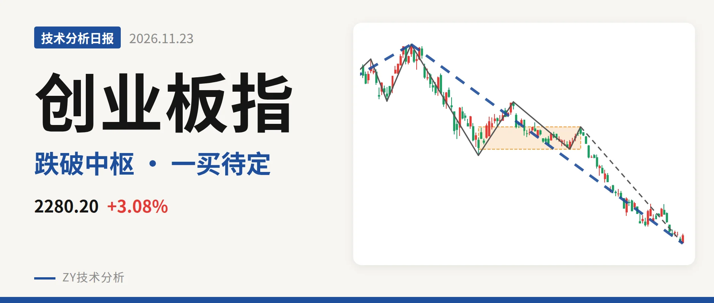
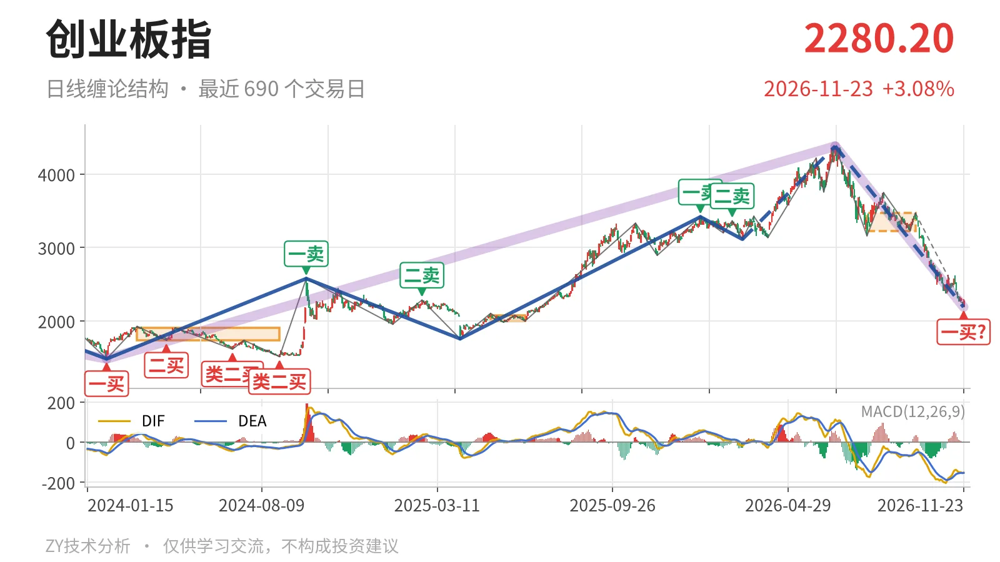
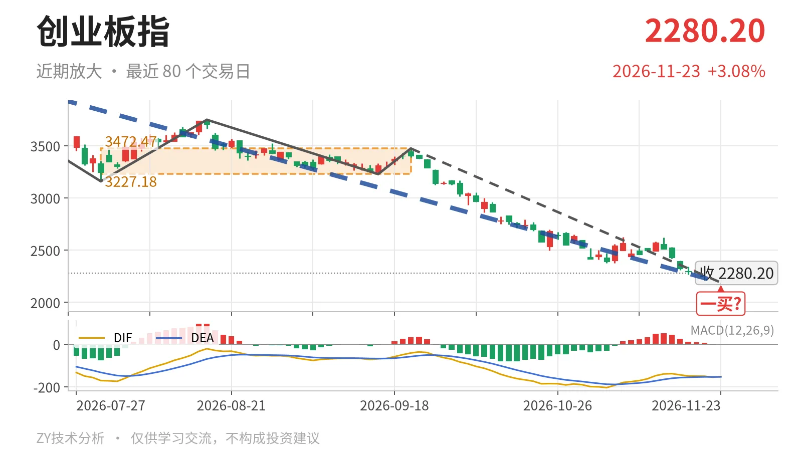

创业板指｜暂定一买在2188点，反抽看2283

最近日线中枢 3227.18—3472.47点，收盘位于中枢之下
一句话：下跌笔未结束，2188.45点一买暂定，反抽先看2283点
📉 走势结构：上涨回落未完成，下跌段仍在延续
更大级别上，2024年2月5日至2026年6月25日的上涨走势尚未走完，6月25日以来的下跌走势还在延续。日线线段里，3月9日至6月25日的上涨线段从3111.88点升至4380.41点，还未被反向线段破坏；6月25日以来的下跌线段已经回到2188.45点，同样没有结束。当前是更大级别上涨后的深度回落段，不是日线级别中枢震荡。

🔻 中枢与位置：跌破最近日线笔中枢，落入历史线段中枢
最近日线笔中枢为7月30日至9月22日的3227.18—3472.47点，较2025年5月14日至2025年6月23日中枢1996.96—2076.91点明显上移。最新收盘2280.20点已低于该中枢下沿约29.3%，中枢失守。价格同时落回2022年4月27日至2023年8月4日线段中枢2122.32—2282.65点内部，略低于上沿。这一带成为当前回落的关键结构参照。
🧭 买卖点：2188.45点一买暂定，前卖点只对应小级别
11月23日低点2188.45点构成日线笔级别一买，但所在下跌笔9月22日至11月23日还在延续，这一买是暂定的，会随这一笔的延续而变化。1月13日3416.84点一卖、2月25日3363.18点二卖之后，6月25日又创出4380点新高，因此这两个卖点只对应更小级别的回落，不改变更大级别上涨段。

⚡ 背驰：绿柱面积缩小，DIF低点却新低
同向比较6月25日至7月30日下跌笔与9月22日至11月23日下跌笔：绿柱面积分别为1837和1110，面积明显缩小；DIF低点分别为-171.1和-204.5，反而更低。价格新低、面积不放大，但DIF低点继续向下，所以尚未构成“新低不新弱”。当前一买缺少DIF低点抬高的配合，背驰还没有坐实。
🔎 关键位置观察：反抽先看2283点，修复看3227点
当前收盘2280.20点略低于历史线段中枢上沿2282.65点，2283点附近是第一道结构关口。若反抽回不到2283点上方，结构上仍属弱势回落延续。若重新站上3227点附近，即回到最近日线笔中枢下沿之上，下跌更可能只是中枢扩展而非新的趋势下跌段。整体结构偏弱，弱在跌破最近日线笔中枢近三成，且暂定一买尚无DIF新低不新弱配合。
⚠️ 本文为基于公开行情数据的缠论技术结构记录，由程序自动计算并生成，仅供学习交流，不构成任何投资建议。市场有风险，投资需谨慎。